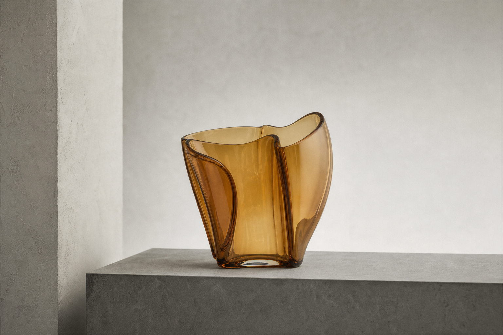
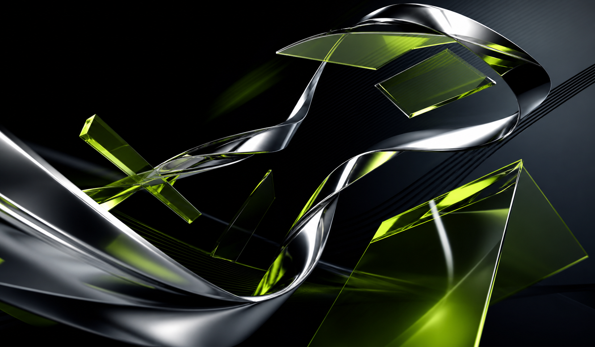
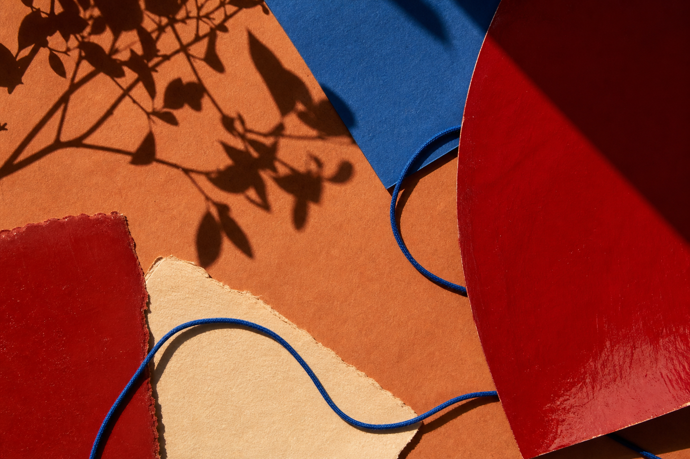

Website UI Designer
Concept UI Cases for websites that need to look considered before they ask for an inquiry.
Three focused explorations for premium product and service brands. Each one shows a different way to shape visual hierarchy, proof, and the path to action.
Independent concept work. Not commissioned client work or performance claims.

Objects and interiors
Nocturne
A quieter product-led experience where material, scale, and the right detail carry the page.

Technology and architecture
Signal
A technical brand direction that turns complex capability into a more legible, premium story.

Hospitality and lifestyle
Kinfolk
An expressive service brand direction designed to preserve personality while making booking easier.